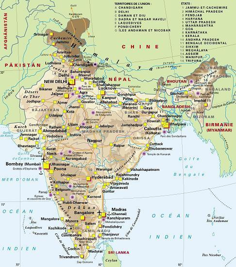
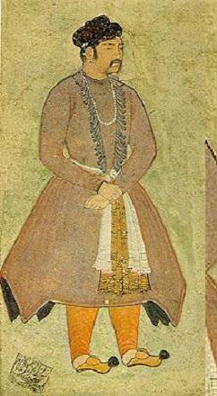

Đây là một bán đảo mênh mông rộng trên năm triệu cây số vuông, lớn gấp hai chục lần xứ Grande Bretagne, ba trăm hai chục triệu dân[1], nhiều hơn toàn thể châu Mĩ (Nam và Bắc), và bằng một phần năm dân số thế giới, nền văn minh trên bán đảo phát triển điều đặn lạ thường từ thời Mohenjo-daro (-2900 hoặc sớm hơn nữa) cho tới thời Gandhi, Raman và Rabindranath Tagore, dân chúng hiện còn theo đủ các tín ngưỡng có thể tưởng tượng được, từ hình thức sùng bái ngẫu tượng của các dân tộc dã man tới một hình thức phiếm thần giáo tế nhị nhất, duy linh nhất, các triết gia của họ đã đưa ra đủ các triết thuyết về chủ đề nhất nguyên, từ các thuyết Upanishad xuất hiện tám thế kỉ trước Ki Tô tới thuyết của triết gia Sankara, sống sau Ki Tô tám thế kỉ, các nhà bác học của họ ba ngàn năm trước đã làm cho khoa thiên văn tấn bộ và hiện nay được giải thưởng Nobel, làng mạc của họ được tổ chức theo những qui tắc rất dân chủ đã có từ thời xửa thời xưa, không ai nhớ từ hồi nào nữa, kinh đô của họ đã được các minh quân Açoka và Akbar cai trị, vừa sáng suốt vừa nhân từ, các người hát rong của họ đã ngâm những thiên anh hùng ca cổ như anh hùng ca của Homère, còn các thi sĩ của họ hiện nay được khắp thế giới đọc, các nghệ sĩ của họ đã xây cất từ Tây Tạng đến Tích Lan, từ Cao Miên đến Java những đền vĩ đại để thờ các thần linh Ấn Độ, và đã chạm trổ hàng chục hàng trăm lâu đài cung điện tuyệt đẹp cho các vua chúa. Đó là xứ Ấn Độ mà hiện nay nhiều người đang gắng sức kiên nhẫn nghiên cứu để phát lộ cho người phương Tây thấy một thế giới mới của trí tuệ mà khỏi tự hào rằng trên địa cầu chỉ có họ mới văn minh[2].

Bản đồ Ấn Độ
(http://www.mimiche.com/images/inde_200903/inde_carte.jpg)
Xứ đó là một tam giác mênh mông, đáy ở phía Bắc, tức dãy núi Himalaya (Hi Mã Lạp Sơn) quanh năm tuyết phủ, đỉnh ở phía Nam, tức đầu đảo Tích Lan, quanh năm nóng như thiêu. Phía Tây là Ba Tư mà dân chúng, ngôn ngữ, thần thánh đều rất gần gũi với Ấn Độ thời Veda, cơ hồ hai xứ là bà con chú bác với nhau. Nếu chúng ta theo biên giới phía Bắc mà tiến về phía Đông thì sẽ gặp A Phú Hãn, đây là Kadahar[3], xưa mang tên là Gandhara, nơi mà nghệ thuật điêu khắc Hi Lạp và Ấn Độ dung hoà với nhau trong một thời gian rồi tách biệt nhau ra không còn bao giờ gặp lại nhau nữa, tiến lên phía Bắc chút nữa, đây là Kaboul nơi xuất phát những cuộc xâm lăng đẫm máu Hồi và Mông Cổ, và hai dân tộc đó đã làm chủ Ấn Độ trong ngàn năm. Ở trong biên giới, đây là Peshawer chỉ cách Kaboul một ngày ngựa. Bạn nhận thấy đất Nga ở xứ
Từ miền Penjab, sông
Không nên coi Ấn Độ là một quốc gia như Ai Cập, Babylone hoặc Anh mà nên coi là một lục địa cũng đông dân, nhiều ngôn ngữ như châu Âu, và về phương diện khí hậu, chủng tộc, văn học, triết học, nghệ thuật cũng gần đa dạng như châu Âu. Ở miền Bắc, các cuồng phong lạnh như băng của dãy Himalaya ào ào thổi quanh năm và khi những ngọn gió đó gặp những hơi nước nóng ở phía
Đó đây, ít nhất là trên một phần năm đất đai, còn những khu rừng hoang của thời khai thiên lập địa, đầy cọp, báo, chó sói và rắn. Phía cuối bán đảo, miền
Ấn Độ thời tiền sử - Mehenjo-Daro – Cổ bực nào?
Vào cái thời mà các sử gia [phương Tây] tin rằng Hi Lạp đã mở màn cho văn minh nhân loại, thì châu Âu ngây thơ cho rằng Ấn Độ sống trong cảnh dã man cho tới khi các dân tộc châu Âu – anh em trong dòng Aryen của họ - rời biển Caspienne, tiến xuống phương Nam, truyền khoa học và nghệ thuật vào bán đảo đó mà dân chúng mới bắt đầu thoát li cảnh tối tăm ngu muội. Các phát kiến gần đây đã phá tan ảo tưởng làm cho họ phấn khởi đó – mà sau này chắc chắc còn nhiều phát kiến khác làm đảo lộn các kết luận, tôi trình bày trong cuốn sách này. Ở Ấn Độ cũng như ở những nơi khác, các chứng tích của buổi đầu nền văn minh bị chôn vùi dưới đất và các nhà khảo cổ có tốn công đào cuốc tới mấy cũng không thể khai quật, tìm hết cho được. Những di tích thời đại cổ thạch khí chất đầy trong nhiều tủ kính các viện tàng cổ
Năm 1924, có nhiều tin tức ở Ấn Độ kích thích các nhà khảo cổ khắp thế giới. Ông John Marshall loan báo rằng các học giả Ấn Độ hợp tác với ông – đặc biệt là ông R.D Banerji – đã tìm thấy ở Mohenjo Daro, trên bờ phía Tây sông Indus - hạ, nhiều di tích của một nền văn minh có vẻ cổ hơn hết các nền văn minh mà chúng ta được biết cho tới nay. Ở đó và Harappa, cách vài trăm cây số về phía Bắc, họ đã đào đất và thấy bốn năm thành phố chồng chất lên nhau, có mấy trăm ngôi nhà và cửa tiệm xây cất bằng gạch, rất chắc chắn, có ngôi gồm mấy từng lầu, hết thảy đều sắp hàng hai bên những con đường rộng hoặc những ngõ hẹp. Ông John nói về thời đại của những ngôi nhà đó như sau:
Những phát kiến đó chứng tỏ rằng ba bốn ngàn năm trước công nguyên, ở miền Sihdh (cực Bắc tỉnh Bombay) và ở miền Pendjab nữa đã có một đời sống thành thị rất hoạt động, nhiều nhà có giếng, phòng tắm, lại có một hệ thống dẫn nước phức tạp, như vậy là người dân thời đó đã có một lối sống, một địa vị xã hội ít nhất cũng bằng dân Sumérie thời cổ, và cao hơn dân Babylone và Ai Cập đồng thời với họ. Ngay ở Ur, nhà cửa xây cất cũng thô sơ hơn ở Mohenjo Daro.

Di chỉ khảo cổ Moenjo-daro
được UNESCO công nhận là di sản thế giới vào năm 1980.
Tại những thành phố chồng chất lên nhau đó, người ta đào được những vật dưới đây: đồ dùng lặt vặt trong nhà, đồ rửa mặt và tắm, những đồ sành hoặc không men hoặc có men nhiều màu, có thứ nặn bằng tay, có thứ tiện, những đồ bằng đất nung, những con thò lò, quân cờ, những đồng tiền cổ hơn hết thảy các thứ tiền của chúng ta được biết, trên một ngàn con dấu hầu hết là đục khắc và mang những chữ tượng hình không ai biết là chữ gì, những đồ sứ rất tốt, những phiến đá chạm trổ nghệ thuật cao hơn nghệ thuật Sumérie, những binh khí và dụng cụ bằng đồng, và một kiểu xe hai bánh bằng đồng (kiểu xe có bánh cổ nhất cho tới hiện nay), những vòng vàng, bạc đeo vào cổ chân hoặc cổ tay và nhiều đồ trang sức khác. Ông Marshall khen là “làm rất khéo, đánh bóng tới nỗi người ta có cảm tưởng rằng mới lấy ra ở một tiệm kim hoàn đường
Điều này mới lạ lùng, những vật đào ở lớp dưới, nghệ thuật lại tiến bộ hơn những vật ở lớp trên. Có những vật bằng đá, bằng đồng hoặc đồng đỏ làm cho ta ngỡ rằng nền văn minh sông
Nhưng chúng ta vẫn chưa có thể nói được rằng nền văn minh Mohenjo Daro có thực như Marshall nghĩ, là nền văn minh cổ nhất không. Nhưng khảo cứu về Ấn Độ thời tiền sử mới chỉ là bắt đầu, mới trong thời chúng ta, các nhà khảo cổ đào được các cổ tích ở Ai Cập, rồi qua miền Mésopotamie, tới Ấn Độ. Có thể chắc rằng khi đào các lớp đất ở Ấn Độ cũng kĩ như ở Ai Cập, người ta sẽ thấy một nền văn minh cổ hơn văn minh Ai Cập nữa[8].
Thổ dân… - Dân tộc xâm lăng – Chế độ cộng đồng ở làng – Các tập cấp – Chiến sĩ – Tu sĩ – Thương nhân – công nhân – Thợ - Bọn ngoại cấp: ở ngoài tập cấp.
Mặc dầu có những phát kiến gần đây ở miền Sindh[9] và miền Mysore, chúng ta cũng vẫn lờ mờ cảm thấy rằng từ cái thời rực rỡ của văn minh Mohejo Daro cho tới khi người Aryen vô Ấn Độ, sự hiểu biết của ta có một lỗ hổng lớn, nói như vầy thì đúng hơn: sự hiểu biết của chúng ta về dĩ vãng chỉ là một lỗ hỏng trong cái dốt mênh mông của ta thôi. Trong số những vật ta tìm được ở miền Indus, có một con dấu gồm hai rắn, đó là biểu tượng cổ nhất của dân tộc Ấn Độ, dân tộc Naga thờ rắn mà người Aryen đã gặp ở Bắc Ấn Độ, và hiện nay còn một số ít sống heo hắt trong những nơi hẻo lánh nhất trên rừng núi miền đó. Tiến về phương
Cuộc xâm lăng đó của người Aryen chỉ là một giai đoạn của một trào lưu nam tiến cứ xuất hiện đều đều, đó là một trào lưu chính trong lịch sử nhân loại cứ nhịp nhàng lên xuống, tạo nên nhiều nền văn minh rồi lại huỷ diệt những nền văn minh đó: người Aryen ồ ạt xâm lăng người Crétois và Egéen, người Germain xâm lăng người La Mã, người Lombard xâm lăng người Ý và người Anh xâm chiếm khắp thế giới. Thời nào cũng vậy, phương bắc cũng sản xuất nhiều nhà lãnh tụ, nhiều danh tướng, phương Nam sản xuất nhiều nghệ sĩ và các vị thánh, còn hạng người hiền lành thì được sung sướng.
Bọn Aryen xâm lăng đó gốc gác ở đâu? Họ cho cái tên Aryen đó có nghĩa là cao thượng, quí phái (tiếng Sanscrit arya là cao thượng, quí phái) nhưng có lẽ đó chỉ là một cách giải thích bịa ra cho môn ngôn ngữ học hóc búa thêm một chút vui tươi[10]. Dù sao thì cũng có thể gần tin chắc rằng họ gốc gác ở bờ biển Caspienne và người Ba Tư cùng huyết thống với họ, hồi xưa gọi miền bờ biển đó là Airyana-vaejo – nhà của người Aryen[11]. Gần đúng vào thời người Aryen Kassite chiếm Babylone thì người Aryen Védique bắt đầu xâm nhập Ấn Độ.
Sự thực những người Aryen đó là dân di trú hơn là kẻ xâm lăng (cũng như người Germain khi chiếm Ý). Nhưng họ khoẻ mạnh, dai sức, ăn uống nhiều, thô bạo, can đảm, chiến đấu giỏi, cho nên chẳng bao lâu làm chủ cả Bắc Ấn. Họ dùng cung tên, chủ tướng mặc áo giáp, chiến xa, sử dụng rìu búa và giáo mác. Họ còn thô lỗ quá, không biết giả nhân giả nghĩa tuyên bố rằng cai trị Ấn Độ để khai hoá Ấn Độ. Họ chỉ muốn chiếm được đất cày, nhiều đồng cỏ cho bò, ngựa, và khi ra trận họ hò hét không phải để đề cao tinh thần dân tộc, quốc gia gì cả, mà chỉ để hô hào “chiếm cho được nhiều bò”. Lần lần họ tiến qua phía Đông sông
Qua giai đoạn xâm lăng rồi, tới giai đoạn tổ chức khai thác, cày bừa. Các bộ lạc của họ họp nhau lại thành những tiểu quốc, mỗi tiểu quốc có một ông vua mà quyền hành bị một hội đồng chiến sĩ hạn chế, mỗi bộ lạc cũng có một người cầm đầu gọi là raja mà quyền hành cũng bị một hội đồng bộ lạc hạn chế, sau cùng mỗi bộ lạc gồm nhiều làng cộng đồng tương đối tự trị do một hội đồng gia tộc cai trị. Phật Thích Ca có lần hỏi Ananda (A Nan), đệ tử thân tín của Ngài: “Con có nghe các người Vajjian thường tụ họp với nhau và dự các buổi họp công cộng của thị tộc họ không?... Ananda này, các người Vajjian mà còn tụ họp với nhau, còn dự các cuộc họp thị tộc như vậy ngày nào thì chắc chắn là họ còn thịnh vượng ngày nấy chứ không suy vi đâu”.
Cũng như mọi dân tộc khác, người Aryen cấm cả sự đồng tộc kết hôn lẫn sự chủng ngoại kết hôn, nghĩa là không được kết hôn với người trong họ gần mà cũng không được kết hôn với người ngoài thị tộc. Từ những qui tắc đó mà phát sinh ra chế độ đặc biệt nhất dưới đây của Ấn Độ: bị chìm ngập trong số thổ dân đông hơn họ nhiều mà họ khinh là một giống thấp hèn hơn họ, người Aryen phải cấm các cuộc kết hôn với thổ dân để giữ cho khỏi bị lai, nếu không thì chỉ một hai thế kỉ sẽ bị thổ dân đồng hoá, thu hút hết mà mất giống. Đầu tiên, sự phân chia đẳng cấp dựa theo màu da[13]: một bên là giống mũi dài, một bên là giống người mũi tẹt, một bên là dân Aryen, một bên là dân tộc Naga và Dravidien, phải theo qui tắc kết hôn với người cùng dòng giống. Ngày nay có biết bao tập cấp dựng trên di truyền, dòng giống, nghề nghiệp, thời cổ không có vậy. Ngay người Aryen thời xưa, hôn nhân cũng được tự do giữa kẻ sang người hèn, miễn là cùng dòng giống mà đừng là bà con gần gũi quá.
Cũng vào khoảng mà Ấn Độ từ thời Veda (2000-1000) chuyển qua thời đại “anh hùng” (1000-500), nghĩa là từ những hoàn cảnh sinh hoạt tả trong các kinh Veda chuyển qua những hoàn cảnh sinh hoạt tả trong các tập anh hùng ca Mahabharata và Ramayana, thì các nghề nghiệp cũng hoá ra chuyên môn và càng ngày càng có tính cách cha truyền con nối, do đó mà sự phân chia tập cấp[14] càng hoá ra nghiêm khắc hơn. Ở trên cao nhất là tập cấp Kshatriya, tức chiến sĩ, họ cho chết trên sa trường mới là vinh, chết trên giường là có tội.
Trong các buổi đầu, chính vua chúa cử hành các cuộc lễ tôn giáo (vua cũng là giáo trưởng): các người Brahamane [Bà La Môn], tức tu sĩ, chỉ đóng các vai phụ. Trong tập Ramayana, một Kshatriya cực lực phản đối cuộc kết hôn của một “thiếu nữ cao khiết” dòng chiến sĩ với một “tu sĩ Bà La Môn bẻm mép”, các sách đạo Jaïn cũng chấp nhận rằng tập cấp Kshatriya cao quí hơn cả, còn các sách đạo Phật cho bọn Bà La Môn là “ti tiện” nữa. Ngay ở Ấn Độ, tập tục cũng có thể thay đổi.
Nhưng lần hết chiến tranh tới hoà bình, cần phát triển canh nông mà tôn giáo rất có ích cho canh nông, chỉ cho dân cách cầu Trời phù hộ cho khỏi bị các tai vạ bất ngờ, cho nên càng ngày càng quan trọng về phương diện xã hội, các điển lễ càng ngày càng phiền phức thêm, bây giờ cần có một hạng người chuyên môn làm trung gian giữa người và các vị quỉ thần, nên tập cấp Bà La Môn đông lên, giàu có lên, uy quyền tăng lên. Lãnh nhiệm vụ giáo dục thanh niên, họ truyền miệng lại lịch sử, văn học và các luật lệ của giòng giống cho các thế hệ sau, thành thử họ có thể tái tạo lại dĩ vãng và chuẩn bị tương lai theo ý họ, họ dạy dỗ các thế hệ mới, bắt mỗi thời phải tôn trọng thêm các tu sĩ, rốt cuộc họ tạo được uy tín cho tập cấp họ, và lần lượt họ vượt lên trên các tập cấp khác trong xã hội Ấn Độ. Ngay từ thời Phật Thích Ca họ đã phá được ưu thế của tập cấp Kshatriya, cho rằng thấp kém hơn họ, tình thế muốn đảo lộn, Phật Thích Ca bảo hai quan điểm đó (của tập cấp Bà La Môn và của tập cấp Kshatriya) đều có lí một phần. Tuy nhiên thời Phật Thích Ca, bọn Kshatriya chưa chịu nhận uy thế tinh thần của bọn Bà La Môn và chính trong phong trào Phật giáo, do một Kshatriya gây nên, chiến đấu với bọn Bà La Môn cả ngàn năm để giành quyền tối thượng về tôn giáo tại Ấn Độ.
Ở dưới tập cấp thiểu số thống trị đó, các giới: Vaisya gồm những thương nhân và dân tự do (nghĩa là không phải là nô lệ), mà trước thời Phật Thích Ca, chưa thành một tập cấp rõ rệt, giới Shudra hay lao động gồm đại đa số dân chúng, và sau cùng là giới Paria, ti tiện, ở ngoài các tập cấp, gồm những bộ lạc thổ dân không cải tổ, như bộ lạc Chandala, những tù binh, những kẻ bị tội mà thành nô lệ. Nhóm người “ngoại tập cấp”, mới đầu không nhiều gì lắm, là tổ tiên của bốn chục triệu tiện dân (intouchable) ở Ấn Độ hiện nay.
Dân du mục – Nông dân – Công nhân – Thương nhân – Tiền tệ và tín dụng – Luân lí – Hôn nhân – Phụ nữ
Những người Aryen đó sống ra sao? Mới đầu họ sống nhờ chiến tranh và cướp bóc, rồi nhờ chăn nuôi, cày bừa, và các tiểu công nghệ cũng giống như các tiểu công nghệ châu Âu thời Trung cổ, vì chúng ta có thể bảo rằng từ thời đại tân thạch khí cho tới cuộc cách mạng kĩ nghệ tạo nên nền kinh tế hiện thời của chúng ta, đời sống hàng ngày của loài người đâu cũng như nhau, không có gì thay đổi. Người Ấn-Aryen nuôi bò cày và vắt sữa bò, không coi bò là một linh vật, và hễ có thể kiếm được thịt thì cứ ăn, sau khi dâng một vài miếng cho các tu sĩ hoặc các vị thần. Người ta ngờ rằng Phật Thích Ca sau khi nhịn ăn trong hồi trẻ, về già ăn thịt heo, bội thực mà tịch (trong cuốn Mahatma Gandhi của Gray, R.M. và Parekh, MC). Họ trồng lúa mạch nhưng hình như trong thời đại Veda[15], họ chưa biết trồng lúa. Ruộng là của công, phân phát cho mỗi gia đình trong làng nhưng công việc dẫn thuỷ nhập điền thì làm chung, tuyệt nhiên không được bán ruộng đất cho người làng khác và chỉ được truyền lại cho con trai, cháu trai thôi. Đại đa số dân chúng là tiểu nông cày cấy lấy ruộng của mình, người Aryen rất tởm cái lối làm việc lãnh tiền công. Ta có thể tin rằng thời đó không có đại điền chủ, không có kẻ nghèo quá, không có bọn triệu phú cũng không có những túp liều bẩn thỉu.
Tại các châu thành, có bọn thợ thủ công độc lập và bọn tập nghề, họ làm đủ mọi nghề lặt vặt, cả ngàn năm trước công nguyên họ đã biết tổ chức chặt chẽ thành các phường: phường kim thuộc, phường mộc, phường đá, phường da, phường ngà, phường đan thúng mủng, sơn nhà, trang hoàng, làm đồ gốm, nhuộm, đánh cá, chèo ghe, săn bắn, đánh bẫy, làm đồ tế, làm mứt, cạo râu, đấm bóp, bán hoa, làm bếp. Như vậy ta thấy đời sống của họ khá phát triển. Phường tự qui định lấy công việc làm ăn và có khi còn làm trọng tài xử các cuộc xích mích trong gia đình, trong phường nữa. Cũng như ở châu Âu, giá cả không tuỳ theo luật cung cầu, người bán nói thách mà kẻ nào ngớ ngẩn thì phải mua đắt, tuy nhiên ở triều đình cũng có một viên chức xem xét các món hàng và định giá bán cho người sản xuất.
Trên bộ, giao thông và chuyên chở dùng ngựa và xe bò hai bánh, nhưng cũng như thời Trung cổ ở châu Âu, có cả ngàn nỗi trắc trở: tới biên giới của một tiểu quốc, các thương đoàn phải trả thuế rất nặng, ấy là chưa kể phải đóng tiền mãi lộ cho bọn lục lâm nữa! Trên thuỷ, sự chuyên chở phát triển hơn. Khoảng 860 trước công nguyên, các tàu buồm nhỏ thôi, dùng rất nhiều mái chèo chở các thổ sản đặc biệt qua bán ở Mésopotamie, Ả Rập, Ai Cập: hương thơm, hương liệu, tơ lụa, bông vải, khăn san, sa lượt, trân châu, hồng ngọc, mun, gỗ quí, gấm thêu ngân tuyến, kim tuyến.
Vì cách thức trao đổi bất tiện nên thương mại không phát triển: mới đầu dùng cách đổi chác bằng hiện vật sau dùng gia súc làm bản vị, các cậu phải mua vợ bằng bò, thiếu nữ Ấn Độ thời xưa cũng như các “cô đem bò về cho cha mẹ” trong truyện Homère. Sau cùng người ta dùng một thứ tiền đồng rất nặng, chỉ được tư nhân đảm bảo thôi. Không có ngân hàng, tiền dành dụm được thì giấu trong nhà, chôn dưới đất hoặc giao cho bạn thân giữ dùm. Tới thời Thích Ca, người ta bắt đầu dùng tín dụng: thương nhân ở các tỉnh khác nhau giao tín dụng trạng cho nhau. Và đôi khi người ta có thể vay tiền của họ, lãi 18 phân mỗi năm, họ cũng dùng nhiều hối phiếu. Hệ thống tiền tệ đó không làm nản lòng các con bạc và những con thò lò đã thành một vật cần thiết cho văn minh. Có nhiều khi nhà vua mở sòng bạc cho dân chúng nướng tiền – y như
Trong công cuộc làm ăn buôn bán, người Ấn Độ thời Veda rất lương thiện. Các vua chúa thời đó, cũng như vua chúa Hi Lạp thời Homère, nhiều khi ăn cướp bò lẫn nhau, nhưng sử gia Hi Lạp chép các chiến dịch của Alexandre, khen người Ấn Độ là “rất liêm khiết, rất biết lẽ phải trái, ít khi kiện nhau, và rất lương thiện, cửa không phải cài then, giao hẹn với nhau không phải làm giấy, và trung thực rất mực”. Trong Rig Veda có nói tới tội loạn luân, thói ve vãn, mãi dâm, phá thai, gian dâm, có cả vài trường hợp đồng tính ái nữa, nhưng cảm tưởng chung khi đọc các kinh Veda và các anh hùng trường ca là đời sống trong gia đình và sự giao thiệp giữa trai gái Ấn Độ thời đó rất đàng hoàng.
Muốn có vợ, người ta có thể mua hoặc cướp đoạt, hoặc ve vãn rủ rê. Cách sau cùng không được phụ nữ ưa, họ cho rằng không được vẻ vang bằng cách thứ nhất mà cũng không thích thú bằng cách thứ nhì. Chế độ đa thê được chấp nhận, và trong giới sang trọng còn được khuyến khích nữa: nuôi được nhiều vợ, đẻ được nhiều con để nối dõi là điều đáng khen. Truyện nàng Draupadi cưới một lúc năm ông chồng anh em ruột thịt với nhau, là một trường hợp của cái tục đa phu kì cục trong các bản anh hùng ca, tục đó còn lưu truyền ở Tích lan tới năm 1859 và hiện nay còn sót lại ở vài làng trong miền sơn cước Tây Tạng. Nhưng chế độ đa thê thịnh hành hơn. Đó là đặc quyền của giới đàn ông có mọi quyền hành độc đoán trong gia đình, có thể nói vợ, con là sở hữu vật của họ, trong một vài trường hợp, họ có quyền bán vợ, đợ con hoặc “tước tập cấp” của vợ con.
Tuy nhiên thời Veda, phụ nữ Ấn Độ được hưởng nhiều tự do hơn các thời sau nhiều lắm. Mặc dù bị các hình thức hôn nhân bó buộc, họ có quyền được chọn chồng. Họ được dự các buổi hội hè, khiêu vũ và cùng với đàn ông làm tế lễ. Họ có thể đi học và như Gargi[16], tranh luận về triết lí. Chồng chết, họ có thể tái giá. Trong thời đại người ta gọi là “thời đại anh hùng”, phụ nữ cơ hồ mất một phần những tự do đó. Người ta không cho họ học hỏi nữa, lấy lẽ rằng “đàn bà học kinh Veda thì quốc gia sinh hỗn độn”, các quả phụ ít tái giá hơn trước, tục purdah bắt đầu xuất hiện, đàn bà phải cấm cung, không để cho đàn ông thấy mặt, đi ngoài đường hoặc ngồi xe phải đeo khăn voan, và tục quả phụ phải hoả thiêu theo chồng, thời Veda chưa có, lúc này đã bắt đầu phổ biến. Người đàn bà lí tưởng thời này là người đàn bà tả trong anh hùng ca Ramayana: nàng Sita trung thành xuất giá tòng phu, một mực khúm núm vâng lời chồng cho tới suốt đời, can đảm chia sẻ mọi cảnh gian nan với chồng.
[1] Sách viết trong thế chiến vừa rồi và hiện nay dân số trên bốn trăm triệu. (ND).
[Hai chữ hiện nay trong chú thích này là năm 1970, tức năm cụ Nguyễn Hiến Lê dịch cuốn Lịch sử văn minh Ấn Độ. (Goldfish)].
[2] Từ thời Megasthène (khoảng -302) tả Ấn Độ do người Hi Lạp biết cho tới thế kỉ XVIII, người châu Âu vẫn coi Ấn Độ là một xứ kì dị, bí mật. Marco Polo (1254-1323) chỉ tả mơ hồ một dãi bờ biển phía Tây. Colomb muốn tìm Ấn Độ mà lại gặp châu Mỹ. Vasco de Gama phải đi vòng châu Phi mới tìm ra Ấn Độ, thời đó là thời con buôn tham tàn ngấp nghé các món lợi của Ấn Độ. Còn các nhà bác học thì có vẻ không chú ý tới Ấn Độ. Một nhà truyền giáo Hoà Lan ở Ấn Độ, Abranham Roger, là một trong những người đầu tiên để ý tới Ấn Độ trong cuốn Open door to Hidden Heathendom (1651). Dryden viết một kịch uyển chuyển về Ấn Độ, kịch Aurengzeb (1675), và một tu sĩ Áo, Fra Paolino de S. Bartolomeo, cho in hai cuốn ngữ pháp sancrit và cuốn Systema Brahmanicum (1792). Năm 1789, William Jones, một nhà Ấn Độ học danh tiếng dịch kịch Shakuntala Kalidasa, bản dịch đó năm 1791 được chuyển qua tiếng Đức đã có tác động mạnh mẽ tới Herder và Goethe, và anh em Schlegel - ảnh hưởng tới toàn thể phong trào lãng mạn, phong trào này hi vọng tìm lại được ở phương Đông cái thần bí và huyền diệu cơ hồ đã bị “thế kỉ ánh sáng” [tức thế kỉ XVIII] và cái tiến bộ khoa học làm tiêu diệt ở phương Tây. Jones làm cho cả thế giới ngạc nhiên khi tuyên bố rằng tiếng sanscrit có họ hàng hầu hết cùng ngôn ngữ châu Âu, như vậy người Âu cùng một chủng tộc với người Ấn thời các kinh Veda, người ta gần như có thể nói rằng tất cả các môn nhân chủng học và môn ngôn ngữ học hiện đại xuất phát từ đó. Năm 1805, tập khảo luận On the Vedas của Colebrooke phát lộ cho châu Âu biết những áng văn chương cổ nhất của Ấn Độ, cũng vào khoảng đó. Anquetil Duperron dịch một bản dịch Ba Tư của bộ Upanishad, nhờ vậy Schelling và Schopenhauer mới được biết triết học Ấn Độ mà Schopenhauer khen là thâm thuý nhất, chưa từng thấy. Hồi đó, và mãi đến năm 1826, Burnouf xuất bản cuốn Essai sur le Pali, nghiên cứu về tiếng Pali, người phương Tây cơ hồ chưa biết chút gì về tư tưởng Phật giáo. Burnouf ở Pháp và môn đệ ông Max Muller ở Anh, đã làm cho các học giả, các nhà bảo hộ văn nghệ dịch và xuất bản tất cả các “thánh thư của phương Đông”, đồng thời Rhys David cặm cụi suốt đời giới thiệu văn học Phật giáo để bổ túc công việc đó. Chính nhờ sự gắng sức đó, người ta nhận thấy rằng chỉ mới hiểu biết được một chút xíu về Ấn Độ, mặc dầu những công trình kể trên đáng coi là quan trọng, hiện nay kiến thức của chúng ta về văn học Ấn Độ không hơn gì những kiến thức của tổ tiên chúng ta thời Charlemagne về văn học Hi La. Nhưng có lẽ những phát kiến đẹp đẽ đó đã làm cho chúng ta quá hăng hái mà đánh giá quá cao lợi ích của chúng chăng. Chúng ta chẳng thấy đấy ư? Một triết gia châu Âu đã bảo “triết học Ấn Độ sâu sắc nhất” và một tiểu thuyết gia danh tiếng đã viết: “Tôi không thấy ở châu Âu và châu Mĩ có những thi sĩ, nhà tư tưởng, nhà lãnh đạo quần chúng nào đáng đem ra so sánh thôi – chứ đừng nên nói là bằng – các thi sĩ, nhà tư tưởng, nhà lãnh đạo quần chúng Ấn Độ”.
Chú thích:
[3] Thành phố lớn thứ hai của A Phú Hãn. (Goldfish).
[4] Bản tiếng Anh ghi là Shimla. (Goldfish).
[5] Do tiếng Daskshina (tay phải) (tiếng La Tinh là dexter). Một tín đồ đứng ngó về phía mặt trời mọc, sẽ thấy phương
[6] Có những liên lạc đó vì chúng ta thấy nhiều con dấu giống nhau ở Mohenjo Daro và ở Sumérie (đặc biệt ở
[7] Macdonell cho rằng nền văn minh kì dị đó gốc ở Sumérie chuyển qua, Hall, ngược lại, cho rằng Sumérie chịu ảnh hưởng của văn minh Ấn Độ. Wooley bảo Sumérie và Ấn Độ cùng chung một nòi giống và cùng chịu ảnh hưởng một nền văn minh xuất phát ở miền Béloutchistan hoặc gần đâu đấy. Các nhà khảo cổ học thấy rằng những con dấu giống nhau đào được Babylonie và Ấn Độ thuộc vào giai đoạn đầu văn minh Sumérie và giai đoạn cuối văn minh
Vậy thì ta có thể tự hỏi: các phát minh của nền văn minh Sumérie có thực là độc đáo, phát sinh trên đất Babylonie không, hay chỉ bắt chước Ấn Độ? Nếu là bắt chước thì dân tộc Sumérien có phải gốc gác từ sông Indus qua không, hoặc ở một miền nào gần sông Indus, trong khu vực ảnh hưởng Ấn Độ? Chưa ai trả lời những câu hỏi đó được, nhưng những câu hỏi đó cũng nhắc ta rằng hiện nay sự hiểu biết của chúng ta còn kém lắm, và một cuốn sách về văn minh đành phải bắt đầu từ một giai đoạn nhân loại đã khá tấn bộ rồi, chứ không thể bắt đầu từ nguồn gốc, từ buổi đầu được.
[8] Mới đây người ta đào được ở gần Chitaldrug trong tiểu quốc Mysore, sáu lớp về sáu giai đoạn liên tiếp của một nền văn minh đã bị chôn vùi, từ những đồ thuộc thời đại thạch khí, những đồ sành tô điểm xuất hiện vào khoảng 4000 năm trước công nguyên, tới những vật mới nhất, vào khoảng 1200 sau công nguyên.
[9] Sindh, cũng như Mohenjo Daro, nay thuộc của
[10] Theo Monier William, Aryen do tiếng sanscrit Ri-ar biến ra, ri-ar là cày ruộng so sánh với tiếng La Tinh aratrum là lưỡi cày, arca là khoảng trống. Theo thuyết đó thì aryen hồi đầu không trỏ một nhà quí phái mà trỏ một nông dân.
[11] Trong một bản hiệp ước kí giữa dân tộc Aryen hittite và dân tộc Aryen mittanien, ở đầu thế kỉ XIV trước công nguyên, chúng ta thấy ghi tên các vị thần rõ ràng là của Ấn Độ thời kinh Veda (Phệ Đà) như Indra, Mithra, Varuna; tục Ba Tư làm lễ uống nước cây haoma cũng giống tục Ấn Độ thời Veda làm lễ uống nước ngọt của cây soma. Ta nhận thấy chữ s sanscrit tương ứng với chữ h Ba Tư ngữ, soma chuyển thành haoma cũng như sindhu chuyển qua thành hindu. Do đó ta có thể kết luận rằng các dân tộc Mittaniene, Hittite, Kassite, Sogdien, Bactrien, Mède, Ba Tư và các người Aryen xâm chiếm Ấn Độ đều là những chi của một nòi giống “Ấn –Âu” rải rác khắp chung quanh bờ biển Caspiene.
[12] Người Ba Tư hồi xưa dùng tiếng Hindoustan để trỏ miền Ấn Độ ở phía Bắc sông Narbuddah.
[13] Tiếng Ấn dùng để trỏ đẳng cấp là
[14] Chúng tôi dịch chữ caste là tập cấp, để phân biệt với classe mà chúng ta đã dịch là giai cấp. Tập có nghĩa là tiếp nối (như trong thế tập, tập ấm); tổ tiên ở trong caste nào thì con cháu cũng ở trong caste đó. Trái lại, cha ở trong classe lao động, con có thể ở trong classe tư sản, hoặc ngược lại, cùng một người lúc trẻ nghèo ở trong classe lao động, về già, giàu có rồi, nhảy lên classe tư sản. Caste và classe khác nhau ở đó. (ND).
[15] Thời các kinh Veda xuất hiện, khoảng 1000 năm trước công nguyên.
[16] Một nữ triết gia thời Veda (coi tiết VII ở sau).